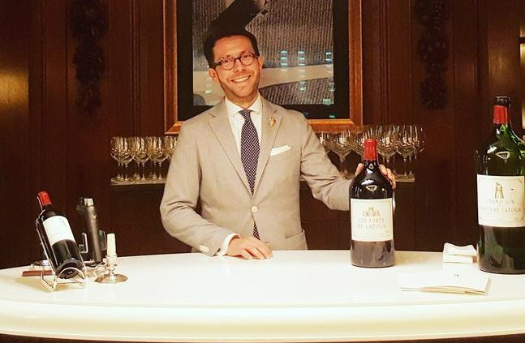
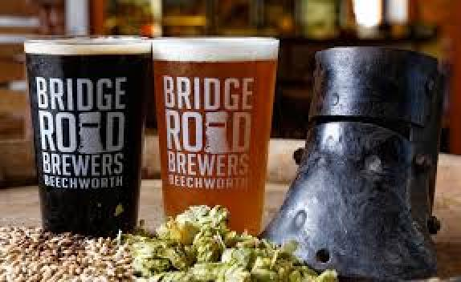
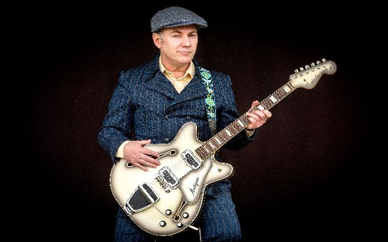

With One Hand Waving Free
29th October - 4th November 2017, Port Douglas, Queensland, Australia
Social Activities
We hope participants will enjoy a range of evening activities we've organized over the week. The Monday wine tasting and Tuesday beer tasting both include dinner and are great value at AU$95 each, payable at the meeting. If you wish to attend either or both please inform us by Sunday 8th October so we know how many to cater for. The reception on the Sunday and the Conference Dinner on the Thursday are complimentary to registered participants and guests so we shall assume you will partake of these unless your arrival and departure dates exclude them. If for some reason you cannot join us for these please let us know.
Sunday 29th October – Evening Reception
Monday 30th October – Evening Wine Tasting led by Jan Konetzki (AU$95)

We are delighted that Jan Konetzki will be conducting a tasting of Australian wines for us this evening. We'll taste nine aged premium wines along with a substantial selection of canapes.
Jan Konetzki is one of the world's top sommeliers. Born in Germany, Jan established himself working for Gordan Ramsay, first at Maze, where John first became acquainted with him, and later at Ramsay's flagship restaurant on Royal Hospital Road in Chelsea. Jan recently moved to 10 Trinity Square, in the heart of the city of London, as wine as Director of Wine at their private members club and for the Four Seasons Hotel including the restaurant Le Dame de Pic. There is very little he doesn't know about wine from any part of the world.
Tuesday 31st October – Evening Beer Tasting by Bridge Road Brewers (AU$95)

Bridge Road Brewers produce artisanal beers entirely locally in the town of Beechworth at the foot of Victoria's alpine ranges midway between Melbourne and Canberra. The notorious Ned kelly was held in the courthouse lockup here in 1871. Dave O'Keefe will introduce a selection of their speciality products over a barbecue dinner.
Wednesday 1st November – Day free for local excursions
Port Douglas Tourist Information Centre
Thursday 2nd November – Conference Dinner
Friday 3rd November – Jeff Lang Evening Concert

We are treated to an evening concert by the famous Australian blues and roots musician Jeff Lang. Jeff won ARIA awards for Rolling Through This World (Best Blues and Roots album 2002, with Bob Brozman), Djan Djan (Best World Music album 2011) and Carried in Mind (Best Blues and Roots album 2012). Rhythms magazine readers have thrice voted an album of his to be the Best Australian Blues Album of the year – in 1996 Native Dog Creek, 2005 You Have To Dig Deep To Bury Daddy and 2006 Dislocation Blues, in collaboration with Chris Whitley.